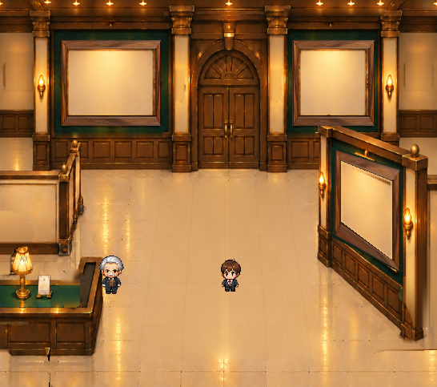

右手前の木製額縁：正面素材から遠近変形
背面左の正面木製額縁を共通素材として、右手前の金額縁の位置と写真窓へ当て込んだ改善候補です。

新方式（正面素材から変形）／空き台紙／100%
比較（右手前だけ変更）
正面額縁を上・右・下・左の四辺ごとに射影変形する共通処理です。写真窓と外周をそれぞれ同じ登録座標に合わせることで隙間を防ぎます。逆向きにも同じ処理を利用できます。金額縁の細かな装飾は木製に再現しません。ゲーム統合前、Lv.1採用未決定の美術確認候補です。
背面左の正面木製額縁を共通素材として、右手前の金額縁の位置と写真窓へ当て込んだ改善候補です。

正面額縁を上・右・下・左の四辺ごとに射影変形する共通処理です。写真窓と外周をそれぞれ同じ登録座標に合わせることで隙間を防ぎます。逆向きにも同じ処理を利用できます。金額縁の細かな装飾は木製に再現しません。ゲーム統合前、Lv.1採用未決定の美術確認候補です。